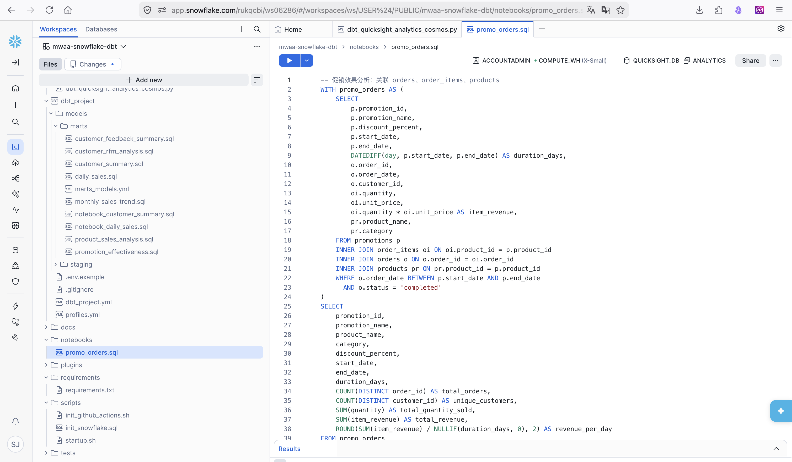
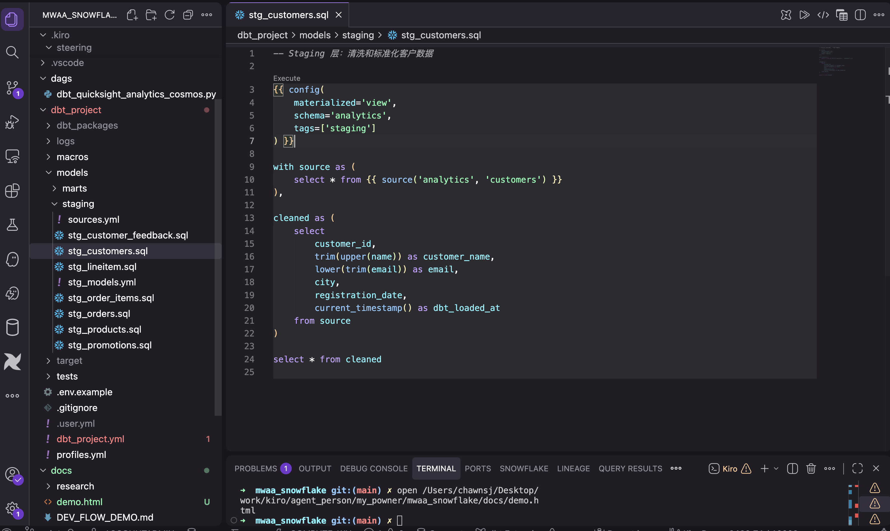

MWAA + dbt + Cosmos + Snowflake 数据转换管道

SQL 开发验证 → 直接连数据 → 推送到 GitHub

AI 翻译 SQL → dbt 模型 + 编译/运行/血缘
| 特性 | 实现方式 | 效果 |
|---|---|---|
| AI 辅助开发 | Kiro (Claude) + Snowflake Copilot + Cortex CLI | 自然语言生成 SQL 和 dbt 模型 |
| 自动部署 | GitHub Actions + OIDC | git push 即部署，无需手动操作 |
| 环境隔离 | dev/prod 不同 schema + RBAC | 本地开发不影响生产 |
| 分层架构 | Silver (view) → Gold (table) | 清晰的数据血缘 |
| 自动授权 | on-run-end Hook → GRANT ANALYST_ROLE | dbt run 后分析师立即可用 |
| 数据测试 | unique / not_null / accepted_values | 每次运行自动验证数据质量 |
| Cosmos 缓存 | /tmp/cosmos_cache | DAG 解析加速 5-10 倍 |
start → silver_models → gold_models → end
总耗时约 3 分钟 | 每日 08:00 UTC 自动执行 | Cosmos 自动解析依赖
dbt 将软件工程最佳实践引入数据转换，提升数据可靠性、可溯源性和可审查性。
| 能力 | 实现方式 | 价值 |
|---|---|---|
| 模块化 SQL | {{ ref('stg_xxx') }} / {{ source() }} | 消除重复代码，自动管理依赖 |
| Macro 复用 | macros/date_utils.sql | 通用逻辑只写一次，多模型复用 |
| Seed 数据映射 | seeds/status_mapping.csv | 用 CSV 管理映射表，比硬编码好维护 |
| 数据测试 | unique / not_null / accepted_values | 每次运行自动验证数据质量 |
| Hooks | on-run-end: grant_analyst_access | dbt run 后自动给分析师授权 Gold 层 |
| 数据血缘 | Snowflake Lineage + Airflow DAG + dbt docs | 三层血缘追踪（物理 + 任务 + 逻辑） |
| 环境隔离 | profiles.yml dev/prod target | 同一套代码，不同 schema 输出 |
| 角色 | 用途 | 权限范围 |
|---|---|---|
DBT_ROLE | dbt 开发和执行 | ANALYTICS 读写 + DEV/PUBLIC schema 读写 |
ANALYST_ROLE | 分析师 / QuickSight | 只读 Gold 层（customer_summary, daily_sales） |
ACCOUNTADMIN | 管理员 | 环境初始化、角色管理 |
| 步骤 | 说明 |
|---|---|
| 注册账号 | 访问 signup.snowflake.com 注册免费试用或使用企业账号 |
| 初始化环境 | 执行 scripts/init_snowflake.sql（数据库 + 表 + 角色 + Git 集成） |
| 创建 Workspace | Snowflake UI → Projects → Workspaces → Create from Git Repository |
| 步骤 | 说明 |
|---|---|
| 创建环境 | AWS 控制台，Airflow 2.10.3，配置 VPC + S3 |
| 上传配置 | requirements.txt + startup.sh → S3 |
| 配置连接 | Airflow UI → Connections → snowflake_default（DBT_USER + DBT_ROLE） |
| 步骤 | 说明 |
|---|---|
| GitHub Actions | bash scripts/init_github_actions.sh（OIDC + IAM Role 一键配置） |
| 步骤 | 说明 |
|---|---|
| 安装 dbt | pip install dbt-snowflake |
| IDE 插件 | 安装 dbt Power User（语法高亮、编译、血缘图） |
| 配置凭证 | cp .env.example .env → 填入 Snowflake 凭证 |
| 验证 | dbt debug --profiles-dir . → All checks passed! |